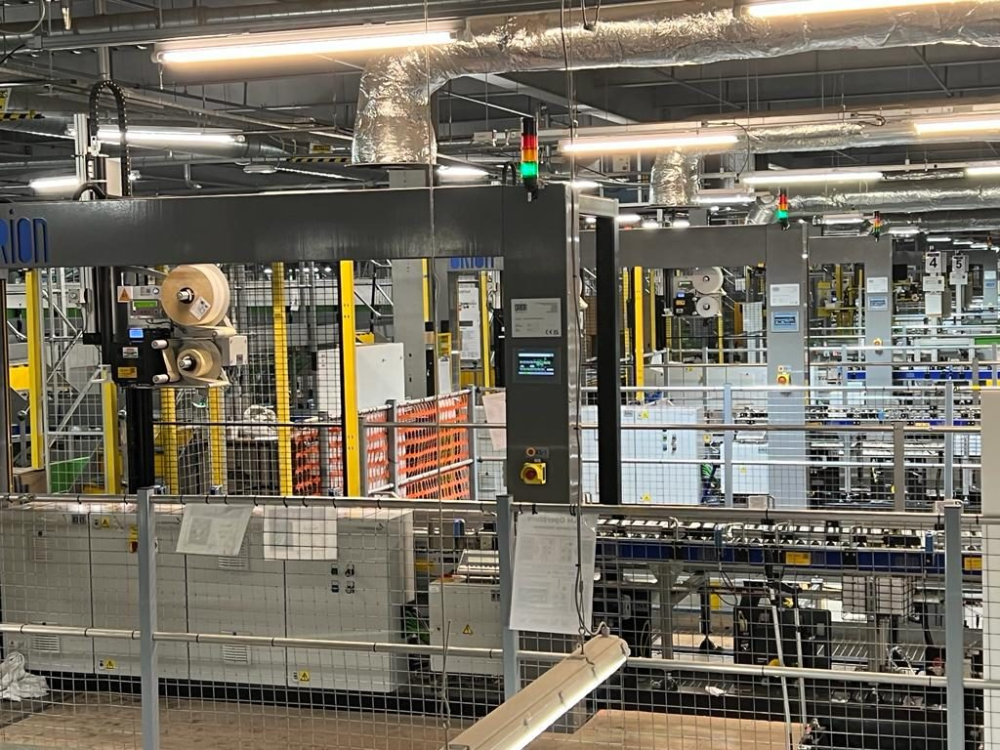
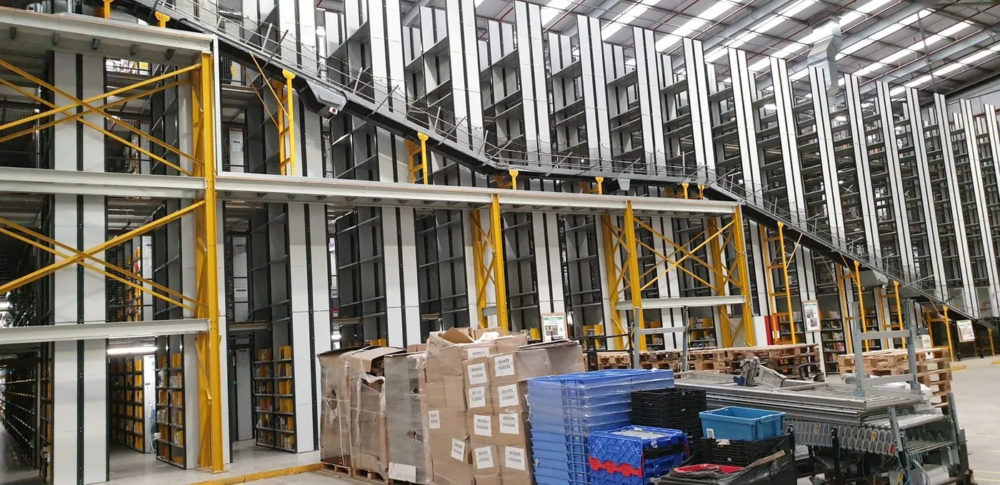

Orion MIS designs, builds and installs UK-made fulfilment automation for e-commerce operations — pack-to-sort conveyors, carrier sorting, SLAM lines, pick towers, multipack lines and AMR fleets, with WCS included — proven inside live Amazon fulfilment centres and available on monthly finance.
Pack-to-sort automation, carrier sorting, label, scan and route, dispatch performance data — high-volume mixed SKU fulfilment that flexes with trading peaks without expanding headcount or floor space.
Finance subject to specification & approval
High-volume mixed SKU fulfilment has to flex with trading peaks without expanding headcount or floor space. The bottleneck is almost always at the end of the line: pack, label, sort, dispatch.
Box erectors, automatic label print and apply, void-fill and pack-out integration reduce manual touchpoints and improve accuracy through the pack zone — then carrier sorting routes every order to the right dispatch lane.
E-commerce products →Multi-kilometre conveyor with ZLP accumulation control, modular expansion and integrated routing — built to handle the volume of national fulfilment hubs — plus Helix sortation on 200mm cassette modules for carrier and destination sorting.
See Helix →Orion WCS handles routing, dispatch zones, peak management and reporting — with live dashboards from day one. It connects directly to existing WMS or transport platforms via REST API or flat-file drop.
See Helios →From ten SLAM lines inside a live Amazon fulfilment centre to an AMR fleet delivered from PO to live in three days.

Ten state-of-the-art SLAM lines — the fastest in production — manifesting, weighing, printing, applying and verifying labels at full line speed. Orion delivered the complete package on Siemens TIA Portal: mechanical, electrical and software, installed and commissioned inside a live Amazon fulfilment environment without stopping the operation.

Pick tower and replenishment conveyors for a live Amazon fulfilment centre — with scan points and decision points routing product through the tower automatically. Installed and commissioned in three days, without stopping the building.
An all-new outbound line for Gompels Healthcare: a fast multipack process fed by a new lift, routed through multiple diverts, with pack and label application in line — engineered, built and installed by Orion as new equipment.
A custom AMR solution built around Octopus Energy's lean lift-to-dispatch flow. Dynamic route management through a pedestrian-heavy environment, quick-change trolley beds for varied product sizes, safety LIDAR with pause/start, integrated order screens and operator alerting — engineered, built, installed and trained against an extremely tight deadline.
Many fulfilment operations are already spending the monthly cost of automation on labour, overtime, agency cover and manual rework. Every part of the Orion range can be put on monthly finance — conveyors, Helix sortation, robotics, AMRs, print & apply and WCS — with entry systems typically from £4,000/month on a 60-month term, subject to specification and finance approval. The ROI calculator turns any manual process — packing, labelling, picking, palletising — into an annualised cost and target saving, so the automation case sits next to the current labour line.
The questions fulfilment and e-commerce operations leads actually ask.
Smaller conveyor packages can be on site in 6–10 weeks. Full Helix sortation systems typically run 12–25 weeks from order to live, with detailed timelines confirmed in the Functional Design Specification stage. Typical Helix install on site completes in under 4 weeks, with no building extensions or planning permission required.
Yes. Most projects involve extending, retrofitting or integrating with legacy conveyor, sortation, scanners or controls. We survey the existing kit first and design around it — rather than ripping out what is already working.
Cassette modules are designed to be swapped in under 15 minutes with no specialist tools. Recommended spares are included in the proposal so the warehouse keeps running. Backed by a 24-month parts and labour warranty on the core product, with optional service contracts for ongoing cover.
Yes — every part of the Orion automation range can be put on monthly finance: conveyors, Helix sortation, robotics, AMRs, print & apply and WCS — turning a CAPEX-heavy automation decision into a monthly OPEX line. Entry systems typically start from £4,000/month on a 60-month term, subject to specification and finance approval.
Send your throughput, peak windows and SKU profile — or book a call and talk it through with an engineer. We'll come back with a sized system, an indicative monthly figure and a route forward.
Finance options available subject to specification and approval. Orion does not promise guaranteed approval — we help build the technical and commercial case alongside the lender.